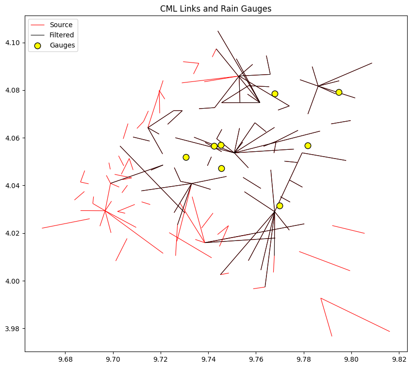

cml, gauges = open_cml_sample(),open_gauge_sample()Filter multisensor data
This module groups all the functions used to filter data based in other sensor data
Filter links based on distance to nearest gauge
Check the Sample data doc page to see how cml and gauges datasets are structured and what variables they contain.
filter_by_distance_to_nearest_gauge
def filter_by_distance_to_nearest_gauge(
cml:Dataset, # CML dataset containing link information with coordinates
gauges:Dataset, # Dataset containing rain gauge locations
mx_dist:float, # Maximum allowed distance (in km) from a link center to its nearest gauge. Links farther than this are filtered out.
gauge_lat:str='lat', # Name of the latitude coordinate in the gauges dataset
gauge_lon:str='lon', # Name of the longitude coordinate in the gauges dataset
)->Dataset: # Filtered CML dataset, containing only links whose center is within `mx_dist` km of at least one gauge
Filter CML links based on their distance to the nearest rain gauge.
<xarray.Dataset> Size: 62MB
Dimensions: (cml_id: 72, sublink_id: 6, time: 2964)
Coordinates: (10)
Data variables:
rsl_avg (cml_id, sublink_id, time) float64 10MB -54.1 -54.1 ... nan nan
tsl_avg (cml_id, sublink_id, time) float64 10MB 10.5 10.5 ... nan nan
rsl_min (cml_id, sublink_id, time) float64 10MB -54.3 -54.3 ... nan nan
tsl_min (cml_id, sublink_id, time) float64 10MB 10.5 10.5 ... nan nan
rsl_max (cml_id, sublink_id, time) float64 10MB -53.8 -53.8 ... nan nan
tsl_max (cml_id, sublink_id, time) float64 10MB 10.5 10.5 ... nan nan
Attributes:
title: East side Douala CML links sample data
file author(s): Orange Cameroun and IRD Rainsmore Group
institution: Orange Cameroun and IRD Rainsmore Group
date: 2025-11-07
source: Modified Orange Cameroun CML data for example purp...
naming convention: COST ACTION OPENSENSE V2
license restrictions: CC BY-NC-ND 4.0xarray.Dataset
- cml_id: 72
- sublink_id: 6
- time: 2964
- cml_id(cml_id)<U19'4.013180N-9.765819E' ... '4.090...
- long_name :
- commercial_microwave_link_identifier
array(['4.013180N-9.765819E', '4.015776N-9.756458E', '4.016736N-9.764944E', '4.016944N-9.753305E', '4.018721N-9.762325E', '4.019750N-9.767776E', '4.019930N-9.759403E', '4.025125N-9.770912E', '4.032132N-9.730055E', '4.033181N-9.761500E', '4.034149N-9.772296E', '4.034701N-9.729347E', '4.037778N-9.767028E', '4.039270N-9.722472E', '4.039580N-9.737019E', '4.040792N-9.776750E', '4.041068N-9.758319E', '4.041256N-9.730708E', '4.041347N-9.773597E', '4.042298N-9.740333E', '4.042502N-9.716614E', '4.044597N-9.727069E', '4.044736N-9.710024E', '4.047503N-9.718511E', '4.049925N-9.774582E', '4.050150N-9.740475E', '4.050528N-9.753875E', '4.052083N-9.788583E', '4.054458N-9.763403E', '4.055917N-9.752681E', '4.056070N-9.768000E', '4.056121N-9.742152E', '4.056639N-9.747222E', '4.056847N-9.738556E', '4.056959N-9.742472E', '4.057459N-9.765805E', '4.058236N-9.768889E', '4.058746N-9.717759E', '4.058868N-9.752014E', '4.059014N-9.759348E', '4.059486N-9.711928E', '4.059995N-9.755237E', '4.060816N-9.773042E', '4.061585N-9.744609E', '4.062903N-9.717026E', '4.064425N-9.761904E', '4.066549N-9.795621E', '4.067820N-9.720067E', '4.068528N-9.726056E', '4.071390N-9.727304E', '4.072442N-9.739396E', '4.072503N-9.771625E', '4.074764N-9.753625E', '4.075836N-9.783931E', '4.076554N-9.759058E', '4.078309N-9.751204E', '4.079211N-9.793847E', '4.079299N-9.747812E', '4.079652N-9.763472E', '4.080070N-9.789737E', '4.080399N-9.753111E', '4.081654N-9.761180E', '4.082815N-9.790491E', '4.083040N-9.782281E', '4.083986N-9.756718E', '4.085795N-9.784833E', '4.086056N-9.752500E', '4.086283N-9.759477E', '4.086545N-9.797375E', '4.088385N-9.755778E', '4.089819N-9.752833E', '4.090565N-9.765189E'], dtype='<U19') - site_0_lat(cml_id)float644.029 4.029 4.029 ... 4.075 4.087
- units :
- degrees_in_WGS84_projection
- long_name :
- site_0_latitude
array([4.029 , 4.029 , 4.029 , 4.015972, 4.029 , 4.029 , 4.015972, 4.029 , 4.040819, 4.029 , 4.033028, 4.040819, 4.029 , 4.040819, 4.040819, 4.042306, 4.03875 , 4.040819, 4.029 , 4.040819, 4.056559, 4.041694, 4.040886, 4.04642 , 4.050192, 4.052028, 4.053667, 4.053694, 4.053667, 4.053667, 4.0585 , 4.058056, 4.053667, 4.060028, 4.053667, 4.0585 , 4.053667, 4.06425 , 4.053667, 4.053667, 4.060333, 4.053667, 4.0585 , 4.059611, 4.06425 , 4.066322, 4.065848, 4.06425 , 4.065667, 4.071389, 4.072222, 4.071639, 4.074778, 4.0817 , 4.074778, 4.081867, 4.0817 , 4.085936, 4.085936, 4.0817 , 4.085936, 4.081441, 4.0817 , 4.0817 , 4.074778, 4.0817 , 4.074778, 4.085936, 4.0817 , 4.085936, 4.074778, 4.08663 ]) - site_0_lon(cml_id)float649.768 9.768 9.768 ... 9.762 9.766
- units :
- degrees_in_WGS84_projection
- long_name :
- site_0_longitude
array([9.767833, 9.767833, 9.767833, 9.738528, 9.767833, 9.767833, 9.738528, 9.767833, 9.733028, 9.767833, 9.774333, 9.733028, 9.767833, 9.733028, 9.733028, 9.774 , 9.762056, 9.733028, 9.767833, 9.733028, 9.702978, 9.728389, 9.699006, 9.71598 , 9.771911, 9.741306, 9.750917, 9.779361, 9.750917, 9.750917, 9.768444, 9.738694, 9.750917, 9.726194, 9.750917, 9.768444, 9.750917, 9.714664, 9.750917, 9.750917, 9.708444, 9.750917, 9.768444, 9.743528, 9.714664, 9.759558, 9.79152 , 9.714664, 9.722972, 9.729139, 9.736111, 9.76925 , 9.761667, 9.786083, 9.761667, 9.756825, 9.786083, 9.752944, 9.752944, 9.786083, 9.752944, 9.765535, 9.786083, 9.786083, 9.761667, 9.786083, 9.761667, 9.752944, 9.786083, 9.752944, 9.761667, 9.76601 ]) - site_1_lat(cml_id)float643.997 4.003 4.004 ... 4.105 4.095
- units :
- degrees in WGS84 projection
- long_name :
- site_1_latitude
array([3.997361, 4.002553, 4.004472, 4.017917, 4.008442, 4.0105 , 4.023889, 4.02125 , 4.023444, 4.037361, 4.03527 , 4.028583, 4.046556, 4.037722, 4.038342, 4.039278, 4.043386, 4.041694, 4.053694, 4.043778, 4.028444, 4.0475 , 4.048586, 4.048586, 4.049658, 4.048272, 4.047389, 4.050472, 4.05525 , 4.058167, 4.053639, 4.054186, 4.059611, 4.053667, 4.06025 , 4.056417, 4.062806, 4.053242, 4.064069, 4.064361, 4.058638, 4.066322, 4.063131, 4.06356 , 4.061556, 4.062528, 4.06725 , 4.07139 , 4.071389, 4.07139 , 4.072661, 4.073367, 4.07475 , 4.069972, 4.07833 , 4.07475 , 4.076722, 4.072661, 4.073367, 4.07844 , 4.074861, 4.081867, 4.08393 , 4.08438 , 4.093194, 4.089889, 4.097333, 4.08663 , 4.091389, 4.090833, 4.104861, 4.0945 ]) - site_1_lon(cml_id)float649.764 9.745 9.762 ... 9.744 9.764
- units :
- degrees in WGS84 projection
- long_name :
- site_1_longitude
array([9.763806, 9.745083, 9.762056, 9.768083, 9.756817, 9.767719, 9.780278, 9.77399 , 9.727083, 9.755167, 9.77026 , 9.725667, 9.766222, 9.711917, 9.741011, 9.7795 , 9.754583, 9.728389, 9.779361, 9.747639, 9.73025 , 9.72575 , 9.721043, 9.721043, 9.777253, 9.739644, 9.756833, 9.797806, 9.775889, 9.754444, 9.767556, 9.745611, 9.743528, 9.750917, 9.734028, 9.763167, 9.786861, 9.720853, 9.75311 , 9.767778, 9.715412, 9.759558, 9.777639, 9.74569 , 9.719389, 9.76425 , 9.799722, 9.72547 , 9.729139, 9.72547 , 9.742681, 9.774 , 9.745583, 9.781778, 9.75645 , 9.745583, 9.801611, 9.742681, 9.774 , 9.79339 , 9.753278, 9.756825, 9.7949 , 9.77848 , 9.751769, 9.783583, 9.743333, 9.76601 , 9.808667, 9.758611, 9.744 , 9.764367]) - length(cml_id)float643.527e+03 3.865e+03 ... 889.0
- units :
- m
- long_name :
- distance_between_pair_of_antennas
array([3527., 3865., 2787., 3289., 2582., 2046., 4718., 1096., 2032., 1683., 516., 1581., 1950., 2369., 928., 697., 975., 524., 3016., 1655., 4340., 706., 2591., 611., 596., 454., 956., 2079., 2778., 633., 546., 879., 1051., 2834., 2012., 630., 4117., 1398., 1176., 2214., 796., 1697., 1142., 498., 603., 669., 924., 1436., 932., 407., 731., 561., 1786., 1382., 700., 1476., 1810., 1858., 2720., 888., 1225., 968., 1010., 895., 2314., 947., 3219., 1453., 2727., 830., 3862., 889.]) - sublink_id(sublink_id)<U3'0_0' '0_1' '1_0' '1_1' '2_0' '2_1'
- long_name :
- sublink_identifier
array(['0_0', '0_1', '1_0', '1_1', '2_0', '2_1'], dtype='<U3')
- frequency(cml_id, sublink_id)float641.453e+04 1.502e+04 nan ... nan nan
- units :
- MHz
- long_name :
- sublink_frequency
array([[14529., 15019., nan, nan, nan, nan], [14473., 14963., nan, nan, nan, nan], [ 8335., 8454., nan, nan, nan, nan], [14935., 14445., nan, nan, nan, nan], [14501., 14991., nan, nan, nan, nan], [14557., 15047., nan, nan, nan, nan], [15103., 14613., nan, nan, nan, nan], [18737., 17727., nan, nan, nan, nan], [14445., 14935., nan, nan, nan, nan], [14529., 15019., nan, nan, nan, nan], [14907., 14417., nan, nan, nan, nan], [14585., 15075., nan, nan, nan, nan], [14501., 14991., nan, nan, nan, nan], [14557., 15047., nan, nan, nan, nan], [14529., 15019., nan, nan, nan, nan], [14473., 14963., nan, nan, nan, nan], [14557., 15047., nan, nan, nan, nan], [14501., 14991., nan, nan, nan, nan], [14473., 14963., nan, nan, nan, nan], [14585., 15075., nan, nan, nan, nan], ... [14501., 14991., nan, nan, nan, nan], [15019., 14529., nan, nan, nan, nan], [17728., 18738., nan, nan, nan, nan], [14417., 14907., nan, nan, nan, nan], [14907., 14417., nan, nan, nan, nan], [14445., 14935., nan, nan, nan, nan], [14529., 15019., nan, nan, nan, nan], [17838., 18848., nan, nan, nan, nan], [ 8468., 8349., nan, nan, nan, nan], [14417., 14907., nan, nan, nan, nan], [14935., 14445., nan, nan, nan, nan], [14991., 14501., nan, nan, nan, nan], [14417., 14907., nan, nan, nan, nan], [14963., 14473., nan, nan, nan, nan], [ 8468., 8349., nan, nan, nan, nan], [14557., 15047., nan, nan, nan, nan], [14991., 14501., nan, nan, nan, nan], [14585., 15075., nan, nan, nan, nan], [14529., 15019., nan, nan, nan, nan], [14991., 14501., nan, nan, nan, nan]]) - transmitter(cml_id, sublink_id)float640.0 1.0 nan nan ... nan nan nan nan
- long_name :
- transmitter_site_identifier
array([[ 0., 1., nan, nan, nan, nan], [ 0., 1., nan, nan, nan, nan], [ 0., 1., nan, nan, nan, nan], [ 0., 1., nan, nan, nan, nan], [ 0., 1., nan, nan, nan, nan], [ 0., 1., nan, nan, nan, nan], [ 0., 1., nan, nan, nan, nan], [ 0., 1., nan, nan, nan, nan], [ 0., 1., nan, nan, nan, nan], [ 0., 1., nan, nan, nan, nan], [ 0., 1., nan, nan, nan, nan], [ 0., 1., nan, nan, nan, nan], [ 0., 1., nan, nan, nan, nan], [ 0., 1., nan, nan, nan, nan], [ 0., 1., nan, nan, nan, nan], [ 0., 1., nan, nan, nan, nan], [ 0., 1., nan, nan, nan, nan], [ 0., 1., nan, nan, nan, nan], [ 0., 1., nan, nan, nan, nan], [ 0., 1., nan, nan, nan, nan], ... [ 0., 1., nan, nan, nan, nan], [ 0., 1., nan, nan, nan, nan], [ 0., 1., nan, nan, nan, nan], [ 0., 1., nan, nan, nan, nan], [ 0., 1., nan, nan, nan, nan], [ 0., 1., nan, nan, nan, nan], [ 0., 1., nan, nan, nan, nan], [ 0., 1., nan, nan, nan, nan], [ 0., 1., nan, nan, nan, nan], [ 0., 1., nan, nan, nan, nan], [ 0., 1., nan, nan, nan, nan], [ 0., 1., nan, nan, nan, nan], [ 0., 1., nan, nan, nan, nan], [ 0., 1., nan, nan, nan, nan], [ 0., 1., nan, nan, nan, nan], [ 0., 1., nan, nan, nan, nan], [ 0., 1., nan, nan, nan, nan], [ 0., 1., nan, nan, nan, nan], [ 0., 1., nan, nan, nan, nan], [ 0., 1., nan, nan, nan, nan]]) - time(time)datetime64[ns]2019-07-01T00:05:00 ... 2019-07-...
- long_name :
- time_utc
array(['2019-07-01T00:05:00.000000000', '2019-07-01T00:20:00.000000000', '2019-07-01T00:35:00.000000000', ..., '2019-07-31T23:20:00.000000000', '2019-07-31T23:35:00.000000000', '2019-07-31T23:50:00.000000000'], shape=(2964,), dtype='datetime64[ns]')
- rsl_avg(cml_id, sublink_id, time)float64-54.1 -54.1 -54.2 ... nan nan nan
- units :
- dBm
- long_name :
- averaged_received_signal_level_over_time_window
array([[[-54.1, -54.1, -54.2, ..., -54. , -54.1, -54.1], [-54. , -54. , -54. , ..., -53.8, -53.7, -53.7], [ nan, nan, nan, ..., nan, nan, nan], [ nan, nan, nan, ..., nan, nan, nan], [ nan, nan, nan, ..., nan, nan, nan], [ nan, nan, nan, ..., nan, nan, nan]], [[-50.1, -50.1, -50. , ..., -49.9, -49.9, -49.8], [-53.1, -53.1, -53. , ..., -52.6, -52.5, -52.5], [ nan, nan, nan, ..., nan, nan, nan], [ nan, nan, nan, ..., nan, nan, nan], [ nan, nan, nan, ..., nan, nan, nan], [ nan, nan, nan, ..., nan, nan, nan]], [[-48.5, -48.5, -48.5, ..., -49.3, -49.2, -49.1], [-48.9, -48.9, -48.9, ..., -49.3, -49.3, -49.3], [ nan, nan, nan, ..., nan, nan, nan], [ nan, nan, nan, ..., nan, nan, nan], [ nan, nan, nan, ..., nan, nan, nan], [ nan, nan, nan, ..., nan, nan, nan]], ... [-47.5, -47.5, -47.5, ..., -47.9, -47.9, -48. ], [ nan, nan, nan, ..., nan, nan, nan], [ nan, nan, nan, ..., nan, nan, nan], [ nan, nan, nan, ..., nan, nan, nan], [ nan, nan, nan, ..., nan, nan, nan]], [[-54.1, -54.1, -54.1, ..., -54.2, -54.5, -54.3], [-54.5, -54.5, -54.6, ..., -54.4, -53.9, -53.7], [ nan, nan, nan, ..., nan, nan, nan], [ nan, nan, nan, ..., nan, nan, nan], [ nan, nan, nan, ..., nan, nan, nan], [ nan, nan, nan, ..., nan, nan, nan]], [[-42.6, -42.6, -42.6, ..., -42.7, -42.7, -42.6], [-41.6, -41.5, -41.5, ..., -41.6, -41.6, -41.6], [ nan, nan, nan, ..., nan, nan, nan], [ nan, nan, nan, ..., nan, nan, nan], [ nan, nan, nan, ..., nan, nan, nan], [ nan, nan, nan, ..., nan, nan, nan]]], shape=(72, 6, 2964)) - tsl_avg(cml_id, sublink_id, time)float6410.5 10.5 10.5 10.5 ... nan nan nan
- units :
- dBm
- long_name :
- averaged_transmitted_signal_level_over_time_window
array([[[10.5, 10.5, 10.5, ..., 10.7, 10.5, 10.5], [ 9.5, 9.5, 9.5, ..., 9.5, 9.5, 9.5], [ nan, nan, nan, ..., nan, nan, nan], [ nan, nan, nan, ..., nan, nan, nan], [ nan, nan, nan, ..., nan, nan, nan], [ nan, nan, nan, ..., nan, nan, nan]], [[12. , 12. , 12. , ..., 12. , 12. , 12. ], [12. , 12. , 12. , ..., 12. , 12. , 12. ], [ nan, nan, nan, ..., nan, nan, nan], [ nan, nan, nan, ..., nan, nan, nan], [ nan, nan, nan, ..., nan, nan, nan], [ nan, nan, nan, ..., nan, nan, nan]], [[14. , 14. , 14. , ..., 14. , 14. , 14. ], [14. , 14. , 14. , ..., 14. , 14. , 14. ], [ nan, nan, nan, ..., nan, nan, nan], [ nan, nan, nan, ..., nan, nan, nan], [ nan, nan, nan, ..., nan, nan, nan], [ nan, nan, nan, ..., nan, nan, nan]], ... [[ 4. , 4. , 4. , ..., 4. , 4. , 4. ], [ 4. , 4. , 4. , ..., 4. , 4. , 4. ], [ nan, nan, nan, ..., nan, nan, nan], [ nan, nan, nan, ..., nan, nan, nan], [ nan, nan, nan, ..., nan, nan, nan], [ nan, nan, nan, ..., nan, nan, nan]], [[15. , 15. , 15. , ..., 15. , 15. , 15. ], [14.5, 14.5, 14.5, ..., 15.5, 16. , 16. ], [ nan, nan, nan, ..., nan, nan, nan], [ nan, nan, nan, ..., nan, nan, nan], [ nan, nan, nan, ..., nan, nan, nan], [ nan, nan, nan, ..., nan, nan, nan]], [[ 8. , 8. , 8. , ..., 8. , 8. , 8. ], [ 8. , 8. , 8. , ..., 8. , 8. , 8. ], [ nan, nan, nan, ..., nan, nan, nan], [ nan, nan, nan, ..., nan, nan, nan], [ nan, nan, nan, ..., nan, nan, nan], [ nan, nan, nan, ..., nan, nan, nan]]], shape=(72, 6, 2964)) - rsl_min(cml_id, sublink_id, time)float64-54.3 -54.3 -54.5 ... nan nan nan
- units :
- dBm
- long_name :
- minimum_received_signal_level_over_time_window
array([[[-54.3, -54.3, -54.5, ..., -54.5, -54.4, -54.4], [-54.3, -54.3, -54.3, ..., -54. , -53.9, -54. ], [ nan, nan, nan, ..., nan, nan, nan], [ nan, nan, nan, ..., nan, nan, nan], [ nan, nan, nan, ..., nan, nan, nan], [ nan, nan, nan, ..., nan, nan, nan]], [[-50.3, -50.3, -50.2, ..., -50.1, -50.1, -50.1], [-53.3, -53.3, -53.2, ..., -52.9, -52.9, -53. ], [ nan, nan, nan, ..., nan, nan, nan], [ nan, nan, nan, ..., nan, nan, nan], [ nan, nan, nan, ..., nan, nan, nan], [ nan, nan, nan, ..., nan, nan, nan]], [[-48.6, -48.6, -48.7, ..., -49.5, -49.3, -49.3], [-49. , -49. , -49.1, ..., -49.5, -49.5, -49.4], [ nan, nan, nan, ..., nan, nan, nan], [ nan, nan, nan, ..., nan, nan, nan], [ nan, nan, nan, ..., nan, nan, nan], [ nan, nan, nan, ..., nan, nan, nan]], ... [-47.8, -47.6, -48. , ..., -48. , -48. , -48.1], [ nan, nan, nan, ..., nan, nan, nan], [ nan, nan, nan, ..., nan, nan, nan], [ nan, nan, nan, ..., nan, nan, nan], [ nan, nan, nan, ..., nan, nan, nan]], [[-54.3, -54.2, -54.2, ..., -54.7, -54.8, -54.4], [-54.7, -54.7, -54.7, ..., -54.9, -54.2, -53.9], [ nan, nan, nan, ..., nan, nan, nan], [ nan, nan, nan, ..., nan, nan, nan], [ nan, nan, nan, ..., nan, nan, nan], [ nan, nan, nan, ..., nan, nan, nan]], [[-42.7, -42.7, -42.7, ..., -42.7, -42.7, -42.7], [-41.7, -41.6, -41.6, ..., -41.7, -41.7, -41.7], [ nan, nan, nan, ..., nan, nan, nan], [ nan, nan, nan, ..., nan, nan, nan], [ nan, nan, nan, ..., nan, nan, nan], [ nan, nan, nan, ..., nan, nan, nan]]], shape=(72, 6, 2964)) - tsl_min(cml_id, sublink_id, time)float6410.5 10.5 10.5 10.5 ... nan nan nan
- units :
- dBm
- long_name :
- minimum_transmitted_signal_level_over_time_window
array([[[10.5, 10.5, 10.5, ..., 10.5, 10.5, 10.5], [ 9.5, 9.5, 9.5, ..., 9.5, 9.5, 9.5], [ nan, nan, nan, ..., nan, nan, nan], [ nan, nan, nan, ..., nan, nan, nan], [ nan, nan, nan, ..., nan, nan, nan], [ nan, nan, nan, ..., nan, nan, nan]], [[12. , 12. , 12. , ..., 12. , 12. , 12. ], [12. , 12. , 12. , ..., 12. , 12. , 12. ], [ nan, nan, nan, ..., nan, nan, nan], [ nan, nan, nan, ..., nan, nan, nan], [ nan, nan, nan, ..., nan, nan, nan], [ nan, nan, nan, ..., nan, nan, nan]], [[14. , 14. , 14. , ..., 14. , 14. , 14. ], [14. , 14. , 14. , ..., 14. , 14. , 14. ], [ nan, nan, nan, ..., nan, nan, nan], [ nan, nan, nan, ..., nan, nan, nan], [ nan, nan, nan, ..., nan, nan, nan], [ nan, nan, nan, ..., nan, nan, nan]], ... [[ 4. , 4. , 4. , ..., 4. , 4. , 4. ], [ 4. , 4. , 4. , ..., 4. , 4. , 4. ], [ nan, nan, nan, ..., nan, nan, nan], [ nan, nan, nan, ..., nan, nan, nan], [ nan, nan, nan, ..., nan, nan, nan], [ nan, nan, nan, ..., nan, nan, nan]], [[15. , 15. , 15. , ..., 15. , 15. , 15. ], [14.5, 14.5, 14.5, ..., 15.5, 16. , 16. ], [ nan, nan, nan, ..., nan, nan, nan], [ nan, nan, nan, ..., nan, nan, nan], [ nan, nan, nan, ..., nan, nan, nan], [ nan, nan, nan, ..., nan, nan, nan]], [[ 8. , 8. , 8. , ..., 8. , 8. , 8. ], [ 8. , 8. , 8. , ..., 8. , 8. , 8. ], [ nan, nan, nan, ..., nan, nan, nan], [ nan, nan, nan, ..., nan, nan, nan], [ nan, nan, nan, ..., nan, nan, nan], [ nan, nan, nan, ..., nan, nan, nan]]], shape=(72, 6, 2964)) - rsl_max(cml_id, sublink_id, time)float64-53.8 -53.8 -53.9 ... nan nan nan
- units :
- dBm
- long_name :
- maximum_received_signal_level_over_time_window
array([[[-53.8, -53.8, -53.9, ..., -53.4, -53.9, -53.9], [-53.8, -53.8, -53.8, ..., -53.5, -53.5, -53.5], [ nan, nan, nan, ..., nan, nan, nan], [ nan, nan, nan, ..., nan, nan, nan], [ nan, nan, nan, ..., nan, nan, nan], [ nan, nan, nan, ..., nan, nan, nan]], [[-49.9, -49.9, -49.7, ..., -49.7, -49.7, -49.7], [-52.7, -52.7, -52.8, ..., -52.3, -52.3, -52.3], [ nan, nan, nan, ..., nan, nan, nan], [ nan, nan, nan, ..., nan, nan, nan], [ nan, nan, nan, ..., nan, nan, nan], [ nan, nan, nan, ..., nan, nan, nan]], [[-48.3, -48.3, -48.3, ..., -49.1, -49. , -48.9], [-48.7, -48.7, -48.8, ..., -49.1, -49.1, -49.1], [ nan, nan, nan, ..., nan, nan, nan], [ nan, nan, nan, ..., nan, nan, nan], [ nan, nan, nan, ..., nan, nan, nan], [ nan, nan, nan, ..., nan, nan, nan]], ... [-47.3, -47.4, -47.4, ..., -47.6, -47.6, -47.7], [ nan, nan, nan, ..., nan, nan, nan], [ nan, nan, nan, ..., nan, nan, nan], [ nan, nan, nan, ..., nan, nan, nan], [ nan, nan, nan, ..., nan, nan, nan]], [[-54. , -54. , -53.9, ..., -54. , -54. , -54.1], [-54.4, -54.4, -54.4, ..., -53.8, -53.7, -53.5], [ nan, nan, nan, ..., nan, nan, nan], [ nan, nan, nan, ..., nan, nan, nan], [ nan, nan, nan, ..., nan, nan, nan], [ nan, nan, nan, ..., nan, nan, nan]], [[-42.5, -42.5, -42.5, ..., -42.6, -42.6, -42.6], [-41.5, -41.5, -41.5, ..., -41.5, -41.5, -41.5], [ nan, nan, nan, ..., nan, nan, nan], [ nan, nan, nan, ..., nan, nan, nan], [ nan, nan, nan, ..., nan, nan, nan], [ nan, nan, nan, ..., nan, nan, nan]]], shape=(72, 6, 2964)) - tsl_max(cml_id, sublink_id, time)float6410.5 10.5 10.5 10.5 ... nan nan nan
- units :
- dBm
- long_name :
- maximum_transmitted_signal_level_over_time_window
array([[[10.5, 10.5, 10.5, ..., 11. , 10.5, 10.5], [ 9.5, 9.5, 9.5, ..., 9.5, 9.5, 9.5], [ nan, nan, nan, ..., nan, nan, nan], [ nan, nan, nan, ..., nan, nan, nan], [ nan, nan, nan, ..., nan, nan, nan], [ nan, nan, nan, ..., nan, nan, nan]], [[12. , 12. , 12. , ..., 12. , 12. , 12. ], [12. , 12. , 12. , ..., 12. , 12. , 12. ], [ nan, nan, nan, ..., nan, nan, nan], [ nan, nan, nan, ..., nan, nan, nan], [ nan, nan, nan, ..., nan, nan, nan], [ nan, nan, nan, ..., nan, nan, nan]], [[14. , 14. , 14. , ..., 14. , 14. , 14. ], [14. , 14. , 14. , ..., 14. , 14. , 14. ], [ nan, nan, nan, ..., nan, nan, nan], [ nan, nan, nan, ..., nan, nan, nan], [ nan, nan, nan, ..., nan, nan, nan], [ nan, nan, nan, ..., nan, nan, nan]], ... [[ 4. , 4. , 4. , ..., 4. , 4. , 4. ], [ 4. , 4. , 4. , ..., 4. , 4. , 4. ], [ nan, nan, nan, ..., nan, nan, nan], [ nan, nan, nan, ..., nan, nan, nan], [ nan, nan, nan, ..., nan, nan, nan], [ nan, nan, nan, ..., nan, nan, nan]], [[15. , 15. , 15. , ..., 15. , 15. , 15. ], [14.5, 14.5, 14.5, ..., 16. , 16. , 16. ], [ nan, nan, nan, ..., nan, nan, nan], [ nan, nan, nan, ..., nan, nan, nan], [ nan, nan, nan, ..., nan, nan, nan], [ nan, nan, nan, ..., nan, nan, nan]], [[ 8. , 8. , 8. , ..., 8. , 8. , 8. ], [ 8. , 8. , 8. , ..., 8. , 8. , 8. ], [ nan, nan, nan, ..., nan, nan, nan], [ nan, nan, nan, ..., nan, nan, nan], [ nan, nan, nan, ..., nan, nan, nan], [ nan, nan, nan, ..., nan, nan, nan]]], shape=(72, 6, 2964))
- title :
- East side Douala CML links sample data
- file author(s) :
- Orange Cameroun and IRD Rainsmore Group
- institution :
- Orange Cameroun and IRD Rainsmore Group
- date :
- 2025-11-07
- source :
- Modified Orange Cameroun CML data for example purposes
- naming convention :
- COST ACTION OPENSENSE V2
- license restrictions :
- CC BY-NC-ND 4.0
Code
links = cml.cml_id.to_dataframe()
links_geo = gpd.GeoDataFrame(index=links.index, geometry=[LineString([(r.site_0_lon, r.site_0_lat), (r.site_1_lon, r.site_1_lat)]) for idx, r in links.iterrows()])
filt_links = filtered_cml.cml_id.to_dataframe()
filt_links_geo = gpd.GeoDataFrame(index=filt_links.index, geometry=[LineString([(r.site_0_lon, r.site_0_lat), (r.site_1_lon, r.site_1_lat)]) for idx, r in filt_links.iterrows()])
gauge_geo = gpd.GeoDataFrame(index=gauge_coords.index, geometry=gpd.points_from_xy(gauge_coords.lon, gauge_coords.lat))
fig, ax = plt.subplots(figsize=(12, 9))
links_geo.plot(ax=ax, color='red', linewidth=0.8, label="Source")
filt_links_geo.plot(ax=ax, color='black', linewidth=0.8, label="Filtered")
gauge_geo.plot(ax=ax, color='yellow', edgecolor='black', markersize=80, zorder=5, label="Gauges")
ax.legend(loc="upper left")
ax.set_title("CML Links and Rain Gauges");